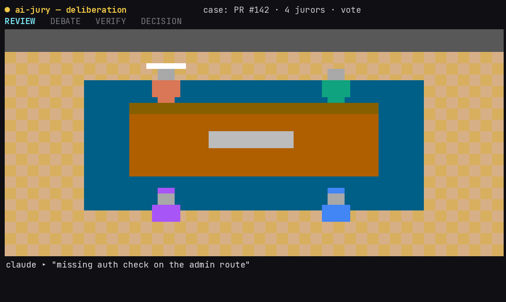
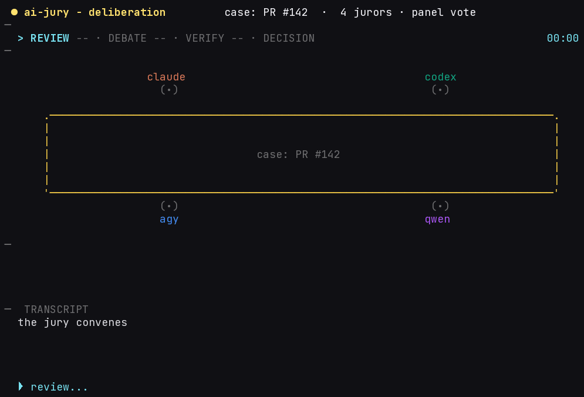

Why a panel
Different models miss different things.
Running them as an adversarial panel — each seeing the others' findings and arguing — surfaces more real issues and filters more false positives than any single reviewer. The research-backed lever is vendor heterogeneity, not more rounds. A free local/open-weight model adds a different perspective at zero marginal cost, and each reviewer runs in its own native CLI — not a raw model API call.
Measured on a small labeled benchmark: run solo, every model missed seeded bugs — the best (Claude, Qwen) caught 67%, Codex and Agy 33%. The four-vendor panel caught 100% — the lift holds whichever single model you'd have picked. (Small N=5, directional; the precision/verification effect is within noise.) See the benchmark →
Pipeline
How a run plays out
Round 1 → adaptive debate → verification → one synthesized verdict.
Every agent reviews the diff
All available agents review the same diff concurrently against the same rubric — no agent sees another's work yet.
The panel debates
Each agent sees the others' reviews and emits agree / dispute / missed. With early_stop, a unanimous panel skips the round.
The chair re-judges findings
False positives are dropped, and the report keeps the evidence behind every finding that survives.
One verdict, one report
The chair consolidates consensus, disputed, and single-reviewer findings into a single verdict plus a CI gate — or let the panel decide by --decision vote. Point the same jury at an issue with --issue to check it for completeness.
Interactive
Build your jury
Pick a panel and depth — the flow and generated jury.toml
update live. Hit Run review to watch a scripted run play out on a sample diff.
(Illustrative; nothing runs in your browser.)
Quickstart
From zero to a verdict
pipx install ai-jury
One command. Stdlib-only, no heavy dependency tree to resolve.
jury init
Detects your installed agent CLIs and local models, writes a valid jury.toml.
jury --pr 123
3a — convene the panel on a PR: debate, verify, one synthesized verdict.
jury --issue 42
3b — or review an issue for completeness & clarity (READY / NEEDS-INFO / UNCLEAR).
More commands
# install once
pipx install ai-jury
jury init # scaffold jury.toml (detects agents + local models)
jury init --wizard # guided setup: numbered questions, every one skippable
jury init --preset offline # free, local-only ($0); also: fast / balanced / thorough
jury config show # see the effective config that will run
jury --pr 123 # review a GitHub PR
jury --pr 123 --post --post-progress # live: a sticky PR comment updated each round
jury --pr 123 --live # stream each step to the terminal as it lands
jury --pr 123 --decision vote # verdict by panel vote instead of a single chair
jury --pr 123 --auto # auto-depth: scale rounds/verify to the diff
jury --issue 42 # review an ISSUE for completeness (READY/NEEDS-INFO/UNCLEAR)
jury --issue 42 --decision vote # issue verdict by panel vote (NEEDS-INFO > UNCLEAR > READY)
jury --issue 42 --post # post the verdict back to the issue thread
jury --issue 42 --live --post # stream + post each step to the issue as it lands
jury --ci --fail-on critical,major # gate CI on blocking findings
Requires Python 3.11+ and at least one reviewer — an agent CLI (claude,
codex, agy),
a free local model via Ollama, or a hosted-API key (ANTHROPIC_API_KEY /
OPENAI_API_KEY / GEMINI_API_KEY) — no CLI install needed.
gh is needed for --pr / --issue and for posting comments.
Configuration
Scaffold it, inspect it, then go
A run is driven by a jury.toml (or built-in defaults). Don't hand-write it the first time — every field is in the configuration reference.
Set up & inspect
jury init # scaffold
jury init --wizard # guided Q&A (skippable)
jury init --preset balanced # or fast/offline/thorough
jury init --list-agents # CLIs available
jury init --list-models # local Ollama models
jury config show # effective config
jury --doctor # readiness + stepsA jury.toml
[jury]
rounds = 2 # 1 = review, 2 = + debate
chair = "claude" # who synthesizes
verify = true # drop false positives
[[agent]]
name = "claude"
vendor = "anthropic"
command = "claude"
[[agent]] # free, offline reviewer
name = "qwen"
vendor = "local"
model = "qwen2.5-coder:7b"
endpoint = "http://localhost:11434/v1"rounds1 = independent review only · 2 = + a debate round. With early_stop / max_rounds, a unanimous panel stops early.chairWhich reviewer synthesizes the final verdict and writes the report. Defaults to the first available agent.decisionchair (default) lets the chair decide, or vote tallies the panel — majority wins, ties resolve to the stricter stance. The --decision flag. Works for PRs and issues.verifyThe chair re-judges each candidate finding against the code to drop false positives — evidence is kept in the report.auto_depthScales rounds & verify to the diff — docs-only → shallow, security-touching → full. The --auto flag.[[agent]]Per reviewer: vendor, command, extra_args; for a local seat use vendor = "local" + endpoint + model.timeout · retriestotal_timeout / phase_timeout / retries bound a run; results can be cached and reviews made incremental.[jury.diff]Large diffs are filtered + chunked; [jury.context] is diff-only by default with secret redaction on.[jury.ci]Exit-code gating for CI; pick the report format (markdown / json / sarif) and PR posting behaviour.
Start from a preset — jury init --preset fast|balanced|thorough|offline — then tweak. CLI flags
override the file per run (--rounds, --verify, --auto, --chair, --decision). Validate with
jury --config-validate; --strict-config turns warnings into errors. An optional, trusted
.jury/policy.toml adds high-risk paths, focus areas, and severity overrides — kept separate from jury.toml.
Built in
Everything a review needs
Free & offline option
Add a local open-weight model (Ollama, llama.cpp, vLLM, LM Studio) as a panel seat — zero cloud cost, fully offline, or mixed with cloud CLIs for diversity.
Follow the run live
--live streams every step to your terminal as it lands; --transcript/--verbose render the full play-by-play; --post-progress keeps a sticky PR comment updated each round; --post-mode phased posts Round 1 / debate / decision separately.
Secure by default
Reviewers read attacker-controlled diffs, so they run sandboxed/read-only. diff-only context plus secret redaction are on by default.
Cost-aware
--auto scales rounds/verify to the diff (docs-only → shallow; security-touching → full); large diffs are chunked and results cached.
CI citizen
--ci --fail-on gates merges; --format json|sarif for code scanning; inline + summary PR comments; opt-in classification labels.
Drop-in skill
Install as a Claude Code plugin or copy the skill into .claude/skills/. Works across the major coding-agent platforms.
Watch it deliberate
Theater mode
--theater is an opt-in, animated view of a live run: the
models take their seats around a table and speak in turn as the run moves through
review → debate → verify, then decide together — by panel vote or recorded by the chair.
No judge; the jurors deliberate with each other. It's driven by the real
on_event stream, so it always reflects the actual run.

--theater-style pixel (truecolor terminal).
--theater.Round-table, not a bench
Jurors seat around the table and take turns; the table itself shows what's on it — the case, the verify checklist, or the decision banner.
Reflects the real run
It's a pure-stdlib ANSI side channel over the orchestrator's event stream — it never touches the report or the CI gate. Works for PRs and issues, chair or vote.
Degrades gracefully
Many jurors or a narrow terminal fall back to a compact roster; a non-interactive terminal falls back to the plain --live step stream.
jury --pr 123 --theater
also: --theater-style pixel · --issue 42 --theater · --decision vote
Where it fits
How ai-jury compares
Not a claim of superiority — a map to help you pick the right tool. A point-in-time snapshot (2026) of public docs; verify against current docs before deciding.
| Capability | ai-jury | Native-CLI peers | API-level | Hosted SaaS |
|---|---|---|---|---|
| Native CLI execution (per-vendor agent) | ✓ | ✓ | ✕ | ✕ |
| Multiple vendors / models | ✓ | ✓ | ✓ | ◐ |
| Consensus / debate rounds | ✓ | ✓ | ◐ | ◐ |
| Review an issue for completeness (not just diffs) | ✓ | ✕ | ✕ | ✕ |
| Verdict by panel vote or single chair | ✓ | ✕ | ✕ | ✕ |
| Verification pass (re-reads code) | ✓ | ◐ | ✕ | ◐ |
| CI gating (non-zero on blocking) | ✓ | ◐ | ✕ | ✓ |
| Risk-aware auto-depth | ✓ | ✕ | ✕ | ◐ |
| Animated deliberation view (in-terminal) | ✓ | ✕ | ✕ | ✕ |
| Offline / local open-weight reviewer ($0) | ✓ | ◐ | ◐ | ✕ |
| Local-first (no code leaves to a SaaS) | ✓ | ✓ | ◐ | ✕ |
| Secret redaction before send | ✓ | ◐ | ◐ | — |
| Auto-apply fixes | ◐ | ◐ | ✕ | ✓ |
| Hosted dashboard | ✕ | ✕ | ✕ | ✓ |
| Dependency footprint | stdlib-only | ◐ Node/Bun | ◐ Python | hosted |
✓ yes · ◐ partial / optional · ✕ no · — n/a
Use a hosted reviewer
CodeRabbit, Greptile, Copilot review — when you want a zero-maintenance, dashboard-driven product with auto-fix and are fine sending code to a third party.
Use an API-level tool
Star Chamber — when you want multi-model consensus but prefer provider APIs over installing each vendor's CLI.
Use ai-jury
When you want each reviewer to run as its native vendor CLI agent, a local-first, stdlib-only drop-in with debate + verification + CI gating — and the option to run fully offline at $0.
Full matrix & rationale in the ecosystem comparison.
Sample output
What lands on your PR
A trimmed real report from jury --mock (deterministic, no live CLIs). A live run uses the same pipeline with the real agent CLIs.
AI Jury
One confirmed major issue.
Consensus findings
- major
src/example.py:42— unchecked return value may swallow an error raised by all three reviewers
Disputed
- Missing docstring at
src/example.py:7— ruled a non-blocking nit.
Notable single-reviewer
- No test covers the error branch.
Show round-by-round transcript
Round 1 — independent reviews
claude · codex · agy
All three independently flag src/example.py:42 major and :7 missing docstring minor.
Round 2 — cross-examination
AGREE — confirm the unchecked-return finding at :42.
DISPUTE — the missing-docstring finding is a nit, not blocking.
MISSED — no test covers the error branch.
Generated by ai-jury — a cross-vendor multi-agent PR review jury.
The jury reviewing its own repository
A four-vendor panel (Claude, Codex, Antigravity + a free local Qwen) reviewed the whole repo as one diff — the verification round confirmed real defects, threw out the panel's own false positives, and even excluded a reviewer that refused to answer instead of scoring it as a pass.
"one reviewer returned only 'I can't assist with that request' — an abdication, not a review" — the chair, excluding a non-answer instead of counting it as a clean passRead the full live review →
Why excluding that reviewer matters
One reviewer didn't review — it replied only "I can't assist with that request." A naive panel would read "no findings" as "looks good" and count it as an APPROVE, so a refusal (or a timeout, or an error) silently becomes a green light. The chair instead recognised the non-answer as an abdication and dropped it from consensus; the other three reviewers carried the verdict. A single-reviewer tool has no such guard — this is the case for a panel in one moment.
Read more: Case study — a refusing reviewer → · the full verbatim report →
FAQ
Questions, answered
Is this a hosted service or SaaS?
No. ai-jury is a local-first CLI + skill that runs on your machine or in your CI. There's no dashboard and no review server — your code doesn't leave to a third-party service. A landing/docs site exists, but a hosted review SaaS is a deliberate non-goal.
Does it edit or auto-apply fixes to my code?
Never automatically. By design it reviews and reports. With --suggest-patches it can emit inspectable suggested patches for verified findings only — you review and apply them yourself.
Can it review issues, not just PRs?
Yes. jury --issue 42 convenes the same panel on a GitHub issue and judges it for completeness & clarity — reproduction steps, expected vs actual, scope/acceptance criteria, missing context — with a READY / NEEDS-INFO / UNCLEAR verdict instead of the PR's APPROVE / REQUEST-CHANGES / COMMENT. Panel voting (--decision vote), live streaming (--live), and posting the verdict back (--post, via gh issue comment) all work for issues too.
Can it run completely offline and free?
Yes. Add a local open-weight model as a panel seat (vendor = "local" via Ollama, llama.cpp, vLLM, or LM Studio) and run with --preset offline for a $0, fully-offline review — or mix one local seat with cloud CLIs for more vendor diversity.
Are these real API calls to the models?
By default, no — ai-jury drives each vendor's own coding-agent CLI (claude, codex, agy) as a subprocess, so each reviewer runs in its native environment with its own tooling and context; it's orchestration, not a raw model API call. For CI/container environments where installing an agent CLI isn't practical, an optional hosted-API adapter (vendor = "anthropic-api" / "openai-api" / "google-api") trades that native tooling for a zero-install reviewer keyed by just an API key.
What do I need installed?
Python 3.11+ and at least one reviewer — an agent CLI (claude, codex, agy), a local model via Ollama, or a hosted-API key (ANTHROPIC_API_KEY / OPENAI_API_KEY / GEMINI_API_KEY) with no CLI at all. The gh CLI is needed for --pr / --issue and for posting comments. The tool itself is stdlib-only — no third-party Python dependencies.
How does it keep secrets and untrusted diffs safe?
Reviewers read attacker-controlled diffs, so they run sandboxed/read-only with diff-only context by default, and secret redaction is on before anything is sent. See the security model.
Not a hosted SaaS. This is a local-first CLI + skill, not a hosted review service or a general multi-agent framework. It reviews and reports; it can emit inspectable suggested patches for verified findings, but never applies them automatically.
Convene the jury on your next PR.
One command installs it. Bring your own agents, or run it free and fully offline.
pipx install ai-jury